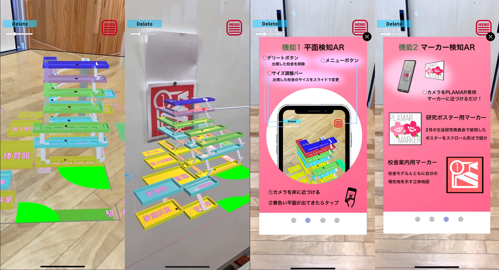

01. 概要
高校在学時に、校内の複雑な構造を解消し、新入生や来校者が直感的に目的地を把握できるようにすることを目的として開発したスマートフォン向けAR（拡張現実）ナビゲーションアプリ。UnityとARFoundationを採用し、現実の空間に校内地図や進行方向のガイドを重ねて表示するシステムを構築しました。
02. 技術的アプローチと実装内容
平面検知と画像マーカーの併用による位置合わせ
AR空間上のオブジェクトを現実の校内環境と正確に同期させるため、ARFoundationが提供する平面検知機能と画像追跡（イメージトラッキング）機能を組み合わせて実装しました。校内の特定の壁面や床面に設置した独自の画像マーカーをスマートフォンのカメラで認識させることで、空間の原点（基準位置）を確定。そこから床面の平面を自動検知して三次元の地図データを生成し、歩行時のズレを最小限に抑える仕組みを作りました。
Unity上での効率的な座標設計
実際の校舎の図面を基に、Unityのエディタ上で各教室や通路の位置関係を三次元のノードとして配置。カメラの位置情報（自己位置推定）と連動して、現在地から目的地までの最短ルートを床面上に矢印などの3Dオブジェクトとして動的に描画する簡易的な経路案内システムを試作しました。

// 開発プロセス：Unity上でのARマーカー検知および3Dルート描画のロジック検証
03. 開発を通して得られた知見
外部のプラグインやアセットをただ組み合わせるだけでなく、デバイスのスペックによる検知精度の限界や、光の環境変化によってARの追従が外れてしまうといった、実機開発特有の物理的な課題に直面しました。これらの問題に対し、マーカーのコントラストの調整や、検知が外れた際に自動で再キャリブレーション（位置補正）を行うリセットボタンを画面上に設けるなど、UI/UXの観点からアプローチを試みました。この経験が、現在の大学での情報メディア分野の学びや、より高度な3D・xRコンテンツ開発への興味の原点となっています。